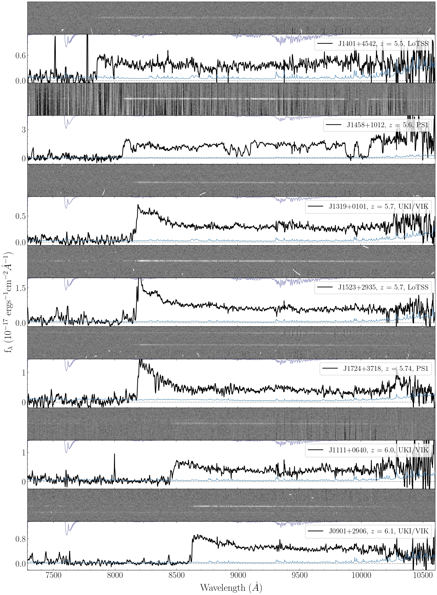
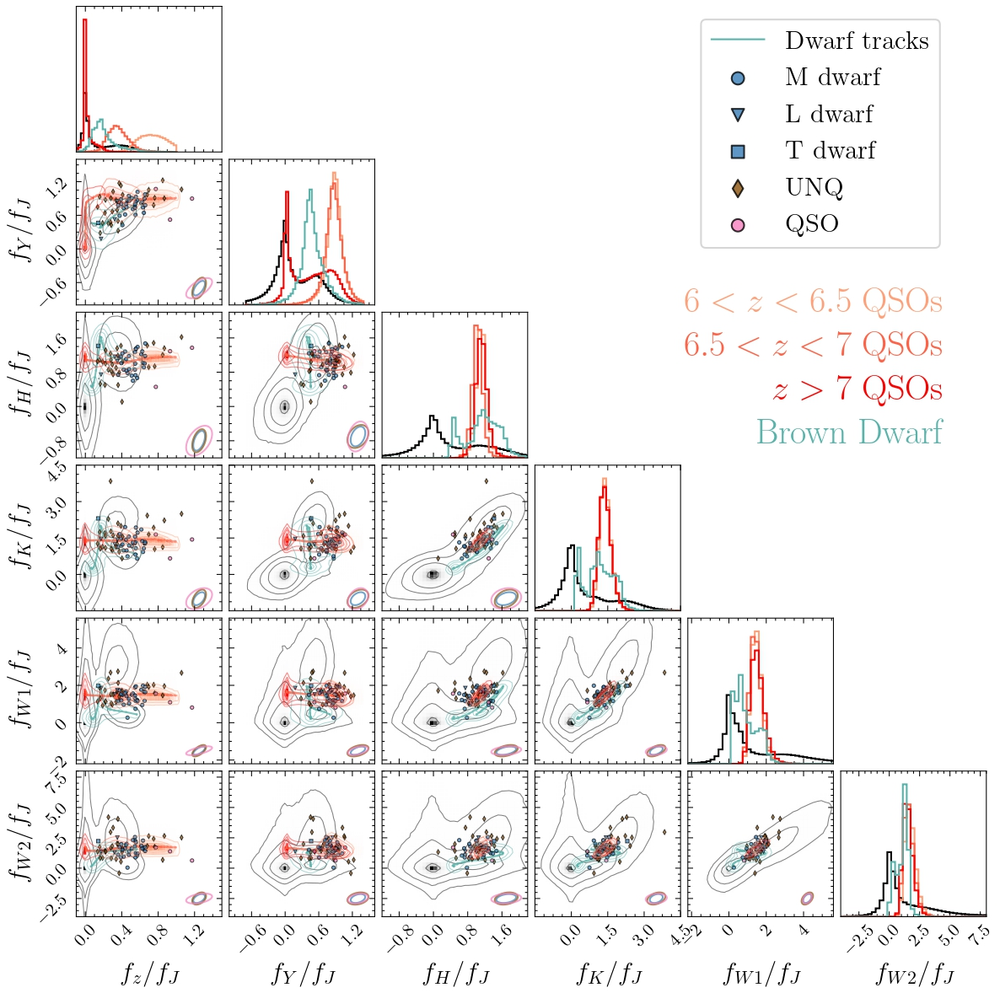

High-z quasar archive
 
In 2022, advised by Prof. Joseph Hennawi, Dr. Riccardo Nanni and Dr. Jan-Torge Schindler, I tried to answer these questions by reducing and examining spectroscopic data of 176 high-z quasar candidates taken with the Keck Observatory in the past three years. These candidates are from various different searches with different surveys and selection methods. Nearly half of the candidates are selected with the method XDHZQSO. We use the package PypeIt to reduce the data. Among them, 7 candidates are new z~6 quasars, and 51 candidates are classified as brown dwarfs. We summarize the reduction and classification results in a catalog named "high-z quasar candidate archive".
we also simulated the observations of fainter and more distant quasars using the information in the archive.
By doing so, we predicted the required exposure time to confirm a random quasar with three different Keck instruments
in a given seeing. These findings provide guidance for candidate selection and the strategy of spectroscopic follow-up observation in future quasar search.